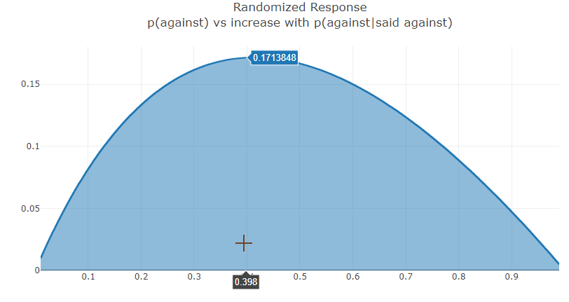

I've known of the term differential privacy for a long while, but only vaguely. Recently, I decided to look a bit more into the topic and also thought it a good place to start/try out interactive explanations. As it turns out, differential privacy is essentially about probabilities and information, which means an excuse to experiment with interactive explanations of relevant areas from probability theory (and an excuse to play with a discrete probability monad).
Of course, there is a great deal more to the subject of differential privacy than I can cover (or looked into) but I think I am satisfied with this as providing a decent high level overview.
One early precursor to DP is the method of randomized response. Proposed by S. L. Warner in 1965 [1], it's a method of confidentially surveying a population.
Suppose you were surveying the population about something controversial and wanted to do so in a manner allowing plausible deniability. You could use the following procedure:
Flip a coin, if it's heads, the responder must answer truthfully and if it's tails they must answer yes. Note that this leaks some information about the responder: if they answer no then you know that they definitely have not performed said action. If they answer, yes, however, you have no way (at that instance in time) of distinguishing between whether it was truthful or the result of a coin flip. But across the entire population, since you control the procedure, you can work backwards to get the true distribution.
Suppose for example, you were surveying individuals about whether they love or hate bacon🥓. They flip a coin and if it's heads they answer truthfully. If it's tails, they must say they Hate Bacon. Using this procedure, the surveyed number of those that love bacon is always ~half the true number in the population. This is because, for bacon loving responses, all the results are true but only get reached half the time. And for bacon hating answers (the protected class), half the time, the answers were truthful while the other half were I love bacon answers converted to I hate the consumption of bacon answers.
In the example below, you can adjust the slider to see how the surveyed numbers change.
True Proportion of Population that Hates Bacon:
20%In the below, assume p is the true proportion that hates bacon. Then:
p = 20%p =
Like Bacon: 0.5 * (1 - ) =
Hate Bacon: 0.5 + 0.5 * =
With some math, we can work out the true numbers:True Against: 2 * ((q=) - 0.5) =
Which you can subtract from 1 to get the proportion that enjoys bacon. If none of this makes sense, play with the slider and it should start to.
Something to note is that if some (ahem, barbaric) human says they love bacon, you definitely know they are speaking the truth (the End Bacon Now contrevarsial but clearly more appropriate true belief is protected). Suppose we wanted to adjust this to be more anonymous?
Differential Privacy was initially expanded upon and given a solid mathematical footing by the prolific computer scientist/cryptographer Cynthia Dwork. It is a large field so we'll only be taking a broad overview of it.
In the example for this section, we'll be surveying people about their favorite sandwich. To keep things simple we'll assume the true preferences of sandwiches are:
Best Sandwich |
Share of Favorites |
|---|---|
Hotdog 🌭 |
10% |
Sandwich 🥖 |
30% |
Vegan Hamburger🍔 |
60% |
How to tally votes without risking shame or ridicule for your belief that hotdogs are the best sandwich? A simple modification of randomized response allows for this. This time we don't demand a specific answer--if the coin lands heads you speak truthfully but if it lands on tails, you sample uniformly (choose randomly) from among the choices. We can also allow the coin to be loaded or weighted. For example, we can use a coin that comes up heads 1% of the time. As long as we are only interested in population level things, despite the high levels of randomization, we can fully recover the original proportions.
With some algebra, I was able to work out that computing the following, for each possible answer recovers the true underlying percentages: \[p_{true} = \frac{p_{survey} - \frac{1}{|C|}(1 - p_{heads})}{p_{heads}}\]
Where |C| stands for total number of choices in the set C = {choice1,..,choicen}. This time, the slider will control how biased our coin is.
40% 40%probTrue = (probSurvey - ((1. - headsProb) * (1/numChoices)))/headsProb
Differential Privacy is not an imprenetrable seal of protection; it is possible to introduce leaks. Two ways that I could think of are attacks involving remembering queries and by asking multiple correlated questions.
If the queries do not retain any data on what each individual response was, privacy remains protected. If instead the responses were recorded, the collector can revisit the data to make new inferences. For example, after the population estimates of the proportions have been worked out, one can condition to just those who said against and work out the probability that those who said against truly are against.
In our randomized response scenario, if the proportion of the population that is against is 41%, the probability that those who answered against truly are against is ~59%. With the second differential privacy method, if it were 36% against at the population level, then those responding against are truly against with a 63% chance. This is a large change in probability! However, if a biased coin was instead used, say one that turns up tails 95% of the time, the worst case scenario would only involve going from 49% to 51%. The population level true values are still as precise but the individuals are much more protected.
The amount of information leaked depends on the underlying population probability and increases from zero and then decreases. Here's a graph for the randomized response scenario:
As you can see, if the purpose is to secure the privacy of individual responses, then retaining the data of responses is subideal, especially when 30%-60% of the populace is against. If the results are to be retained, we can at least demand a high bias or a low probability of requiring a truthful response (most differential privacy work is biased towards the concerns of the data collector so they might not agree with my suggestion).
Another manner where which the implementor can cheat is by retaining responses and querying with either the same or a very similar set of questions. If the survey giver keeps asking the same questions, they can get ever more confident as the true value of the responses. But that is not the only way to act in bad faith. If the survey processes constructs questions whose responses are correlated, they can become fairly certain about true answers by even just the second query (or the first if enough different questions are asked).
In our final scenario, we will visit a world of dogs, mice and cats ruled by fat cats. The Fat Cats are performing what is ostensibly a demographic survey. To respect the right to anonymity of the denizens, they tell everyone they're implementing differential privacy. Those few probing questions? To provide better services, they say.
We will take the perspective of a single animal being queried. There is a predictor, a bayesian, that doesn't get to see our selected species. We simulate it asking questions each time the button is pressed (you can also think of it as different phrasings each time). Directly below (for comparison) we will also simulate our change in predicted species from asking the same single question of are you a dog or cat or mouse? a number of times equal to button presses.
Click the query button to see how our bayesian changes its confidence in its predictions.
Select your species:
Relationship between questions:
|
Times asked: 1